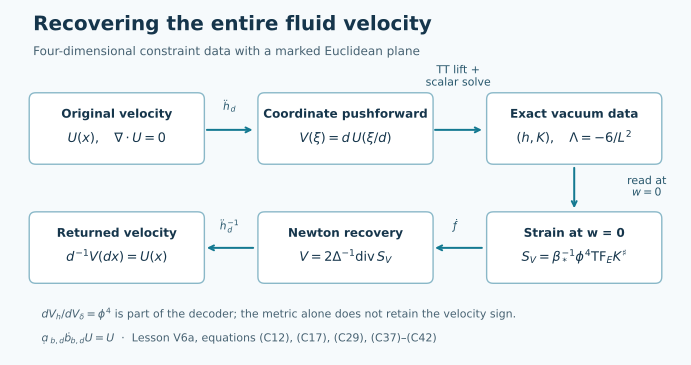
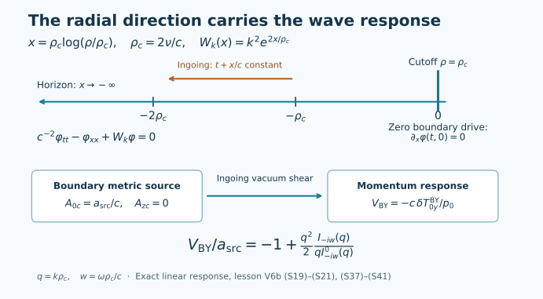

Appendix to the forced Navier–Stokes blowup argument
Appendix: Navier–Stokes connections to vacuum gravity
Two appendix lessons to the forced Navier–Stokes blowup argument. The first encodes smooth compact incompressible velocity snapshots in exact gravitational constraint data and recovers the velocity. The second derives a separate linear gravitational shear model with a Navier–Stokes limit. These connections do not establish a gravitational singularity or a gravitational continuation through fluid blowup.
Exact vacuum constraint data from a velocity field
1. The question and the objects
A velocity field specifies motion in three-dimensional space. Initial data for gravity consist of a spatial metric and a second fundamental form. This lesson constructs an explicit map from the first kind of data to the second and proves that the original velocity can be recovered exactly.
This is Appendix A to the forced Navier–Stokes blowup argument. The encoding applies to its smooth compactly supported velocity at each time before blowup. Section 7 gives the exact strain readout and time-evolution residual, which specify what this connection says about a family of fluid snapshots. It does not identify that family with an Einstein spacetime evolution.
The input is
\[\mathscr U=C^\infty_{c,\operatorname{div}=0}(\mathbb R^3;\mathbb R^3). \tag{C1}\]
Thus every component is smooth, the union of the component supports is compact, and \(\sum_{i=1}^3\partial_iU_i=0\). Its strain tensor is
\[(S_U)_{ij}=\frac{\partial_iU_j+\partial_jU_i}{2}. \tag{C2}\]
We use four spatial coordinates \(Y=(w,\xi^1,\xi^2,\xi^3)\), the Euclidean metric \(\delta\), and the marked three-plane \(E=\{w=0\}\). Capital indices run over the four spatial coordinates; lower-case indices run over the three coordinates of \(E\). Repeated indices are summed. The Euclidean square of a tensor includes both orders of its mixed components.
For a Riemannian metric \(h\), let \(\nabla_h\), \(R(h)\), and \(dV_h\) denote its connection, scalar curvature, and volume form. Write \(K^\sharp{}^A{}_B=h^{AC}K_{CB}\). The vacuum constraint equations with cosmological constant \(\Lambda\) are
\[\begin{aligned} R(h)+(\operatorname{tr}_hK)^2-|K|_h^2&=2\Lambda,\\ \nabla_h^AK_{AB}-\partial_B(\operatorname{tr}_hK)&=0. \end{aligned} \tag{C3}\]
Here \(K\) is the second fundamental form in the convention that zero-shift Einstein evolution has \(\partial_t h=2cNK\), where \(N\) is the lapse. Equation (C3) is the space of data we will construct. The existence theorem below concerns these constraints; its proof does not require a spacetime evolution theorem.
The construction follows §§5–7 of The gravitational identity carried by Navier–Stokes strain. The conformal method is due to the mathematical-relativity literature; the general-dimensional formulas used here appear in Choquet-Bruhat, Isenberg and Pollack, §2, equations for the conformal metric and second fundamental form. We derive the needed four-dimensional formulas and the existence result below.
The required analysis is differentiation, integration, convolution, and the maximum principle at a maximum or minimum. Section 4 supplies the particular elliptic inverse and its regularity argument. The original fluid theorem and its construction can be read in the main Navier–Stokes blowup proof.
2. Parameters and the original coordinates
Keep the physical constants \(c,\nu,L,r_h\) positive. For the original cutoff calibration choose \(r_c>r_h\) with
\[f_c=1-\frac{r_h^4}{r_c^4}, \qquad \nu=\frac{cLr_c\sqrt{f_c}}{4r_h}. \tag{C4}\]
Every prescribed \(\nu>0\), with \(c,L,r_h\) fixed, admits exactly one such \(r_c\): the square of \(r_c\sqrt{1-r_h^4/r_c^4}\) is \(r_c^2-r_h^4/r_c^2\), which increases continuously from zero to infinity on \((r_h,\infty)\).
Choose
\[0<s_*<\frac{\pi L}{8c},\qquad \vartheta_*=\frac{4cs_*}{L},\qquad r_{\mathrm{ref}}^2=r_h^2\sin\frac{2cs_*}{L},\qquad d=\frac{r_{\mathrm{ref}}}{r_c}>0. \tag{C5}\]
The reference spatial metric in the coordinates \(y=(w_b,x_b^1,x_b^2,x_b^3)\) is
\[h_* =\frac{r_h^2}{L^2} \operatorname{diag}\!\left( \frac{\cos^2(2cs_*/L)}{\sin(2cs_*/L)}, \sin(2cs_*/L),\sin(2cs_*/L),\sin(2cs_*/L)\right). \tag{C6}\]
If \(J_*\) is its positive diagonal square root, the map \(Y=J_*y\) satisfies \(J_*^*\delta=h_*\). In particular, \(\xi=(r_{\mathrm{ref}}/L)x_b\), whereas the cutoff coordinate is \(x=(r_c/L)x_b\). Thus \(\xi=dx\). The velocity pushforward is
\[V(\xi)=\mathcal P_dU(\xi)=dU(\xi/d). \tag{C7}\]
It retains the original vector field under that specified map. Direct differentiation gives
\[\operatorname{div}_\xi V=0,\qquad S_V(\xi)=S_U(\xi/d),\qquad \Delta_\xi V(\xi)=d^{-1}(\Delta_xU)(\xi/d). \tag{C8}\]
Set
\[\begin{aligned} a_*&=\frac1{L\sin\vartheta_*},& \tau_*&=-\frac4L\cot\vartheta_*,\\ \kappa_*&=\frac34\tau_*^2+\frac{12}{L^2}=12a_*^2,& \beta_*&=\frac{8a_*\nu}{c^2}. \end{aligned} \tag{C9}\]
All four constants are kept in the construction. In particular, the \(\nu\) in \(\beta_*\) is the original physical cutoff viscosity. Using (C4)–(C5) and \(\sin\vartheta_*=2\sin(2cs_*/L)\cos(2cs_*/L)\) also gives
\[\beta_*= \frac{r_c\sqrt{f_c}\,r_h^3} {c\,r_{\mathrm{ref}}^2\sqrt{r_h^4-r_{\mathrm{ref}}^4}}. \tag{C10}\]
The interval for \(s_*\) fixes the positive square root and the sign of the cosine in this identity.
3. A compact tensor that solves the momentum constraint
Fix a length \(\ell_w>0\) and define
\[\eta(z)= \begin{cases} \exp\!\left(1-\dfrac1{1-z^2}\right),&|z|<1,\\ 0,&|z|\geq1, \end{cases} \qquad b(w)=w\eta(w/\ell_w). \tag{C11}\]
This is smooth at the endpoints: each derivative from inside is an exponential tending to zero times a rational function of \(1-z^2\). Every inverse power is dominated by that exponential. Also \(b(0)=0\), \(b'(0)=1\), and \(b\) is compactly supported.
Define a symmetric tensor by
\[\begin{aligned} (\mathscr L_bV)_{ij}&=b'(w)(S_V)_{ij},\\ (\mathscr L_bV)_{wi}=(\mathscr L_bV)_{iw} &=-\frac{b(w)}2\Delta V_i,\\ (\mathscr L_bV)_{ww}&=0. \end{aligned} \tag{C12}\]
Proposition 1. The map \(\mathscr L_b\) is linear and takes \(\mathscr U\) to smooth compactly supported tensors satisfying
\[\operatorname{tr}_\delta\mathscr L_bV=0, \qquad \partial^A(\mathscr L_bV)_{AB}=0. \tag{C13}\]
These properties are called trace-free and transverse. They hold on all of \(\mathbb R^4\), including the boundary of the support.
Proof. Smoothness and compact support follow from (C11)–(C12). The trace is \(b'\operatorname{div}V=0\). For a transverse index \(i\), incompressibility gives
\[\partial_j(S_V)_{ji}=\frac12\Delta V_i.\]
Consequently
\[\partial^A(\mathscr L_bV)_{Ai} =\frac{b'}2\Delta V_i-\frac{b'}2\Delta V_i=0.\]
For the remaining index,
\[\partial^A(\mathscr L_bV)_{Aw} =-\frac b2\Delta(\operatorname{div}V)=0.\]
Every identity extends smoothly across the support boundary. This proves the proposition.
Both mixed components contribute to the squared norm, so the full formula is
\[|\mathscr L_bV|_\delta^2 =b'^2 S_V:S_V+\frac{b^2}{2}|\Delta V|^2. \tag{C14}\]
Introduce the noncompact constant background and its compact perturbation:
\[\bar A_0=-a_*\operatorname{diag}(-3,1,1,1), \qquad \bar A(V)=\bar A_0+\beta_*\mathscr L_bV. \tag{C15}\]
Both are transverse and trace-free. Since the transverse block of \(\bar A_0\) is \(-a_*I_3\) and \((\mathscr L_bV)_{ww}=0\),
\[\bar A_0:\mathscr L_bV=-a_*b'\operatorname{tr}S_V=0.\]
It follows that
\[\begin{aligned} q(Y):=|\bar A(V)|_\delta^2 &=\kappa_*+F(Y),\\ F(Y)&=\beta_*^2\left(b'^2S_V:S_V+ \frac{b^2}{2}|\Delta V|^2\right)\geq0. \end{aligned} \tag{C16}\]
The function \(F\) is smooth and compactly supported. The background \(\bar A_0\), and therefore \(\bar A(V)\), remains present outside that support.
4. Solving the scalar equation at every finite amplitude
Theorem 2. For every \(V\in\mathscr U\), there is exactly one smooth positive solution of
\[-6\Delta_4\phi+\kappa_*\phi^3-q\phi^{-5}=0, \qquad \lim_{|Y|\to\infty}\phi(Y)=1. \tag{C17}\]
It obeys
\[1\leq\phi\leq M, \qquad M=\left(\frac{\|q\|_\infty}{\kappa_*}\right)^{1/8}. \tag{C18}\]
There is no smallness assumption on \(V\), its strain, or its Laplacian.
4.1 The positive inverse used in the proof
For any \(a>0\), define
\[G_a(Y)=\int_0^\infty e^{-at} \frac{e^{-|Y|^2/(24t)}}{(24\pi t)^2}\,dt, \qquad R_af=G_a*f. \tag{C19}\]
The integrand is the four-dimensional heat kernel for \(6\Delta\). Its spatial integral is one, hence Tonelli's theorem gives
\[G_a\geq0,\qquad \int_{\mathbb R^4}G_a=\frac1a, \qquad \|R_af\|_\infty\leq a^{-1}\|f\|_\infty. \tag{C20}\]
The same formula shows that \(R_a\) preserves inequalities. Differentiating the heat kernel in time and integrating \(-\partial_t(e^{-at}e^{6t\Delta}f)\) proves
\[(-6\Delta+a)R_af=f \tag{C21}\]
first for smooth compactly supported \(f\), then for bounded \(f\) in the distributional sense by testing and using the integrable kernel. The endpoint at \(t=\infty\) vanishes because of \(e^{-at}\); the endpoint at zero is \(f\).
We record the regularity needed below. The first spatial derivative of the heat kernel has integral bounded by a constant times \(t^{-1/2}\), so \(\nabla G_a\in L^1\). Thus \(R_af\) is continuously differentiable with bounded derivative when \(f\) is bounded: translations are continuous in \(L^1\) for the kernels \(G_a\) and \(\nabla G_a\). If \(f\) is Lipschitz, the second derivative can be integrated after subtracting \(f(Y)\) inside the convolution, since the second derivative of a heat kernel has integral zero. The bound is
\[\int_{\mathbb R^4}|D^2K_t(Z)|\,|f(Y-Z)-f(Y)|\,dZ \leq C\operatorname{Lip}(f)t^{-1/2}, \tag{C22}\]
where \(K_t(Z)=(24\pi t)^{-2}e^{-|Z|^2/(24t)}\); the bound follows by the substitution \(Z=\sqrt t\,W\). It is integrable at zero, and the factor \(e^{-at}\) handles infinity. Dominated convergence proves continuity of the second derivatives. Repeating this argument on derivatives proves smoothness whenever the right-hand side becomes smooth with bounded derivatives. These arguments also justify the differentiations used in (C21).
4.2 Monotone construction
Choose
\[C=3\kappa_*M^2+5\|q\|_\infty>0, \qquad g(Y,u)=Cu-\kappa_*(1+u)^3+q(Y)(1+u)^{-5}. \tag{C23}\]
For \(0\leq u\leq M-1\),
\[\partial_ug=C-3\kappa_*(1+u)^2-5q(Y)(1+u)^{-6}\geq0.\]
Moreover,
\[g(Y,0)=F(Y)\geq0, \qquad g(Y,M-1)\leq C(M-1), \tag{C24}\]
because \(\kappa_*M^8\geq q(Y)\). Start with \(u_0=0\) and set
\[u_{n+1}=R_Cg(\cdot,u_n). \tag{C25}\]
The positivity and total mass of \(G_C\) prove inductively
\[0\leq u_n\leq u_{n+1}\leq M-1. \tag{C26}\]
The pointwise limit \(u\) therefore exists. Dominated convergence in the convolution, using \(|g|\leq C(M-1)\) on this interval, gives \(u=R_Cg(\cdot,u)\). Formula (C21) yields (C17) for \(\phi=1+u\).
For completeness, regularity does not depend on presuming that the pointwise limit is smooth. The bounded convolution first gives \(u\in C^1\) with bounded derivative. Since \(q\) is smooth with bounded derivatives, \(g(\cdot,u)\) is then Lipschitz. Formula (C22) gives \(u\in C^2\). Differentiating the convolution with one derivative on \(G_C\) and the remaining derivatives on \(g\) now gives one further bounded continuous derivative at each step. Induction proves \(u\in C^\infty\).
4.3 The boundary condition at infinity and uniqueness
We will use the following maximum principle on the whole space. If a bounded \(C^2\) function \(z\) satisfies \((-6\Delta+a)z\leq0\), with constant \(a>0\), then \(z\leq0\). Indeed take \(R^2=96/a\) and \(\psi(Y)=1+|Y|^2/R^2\). Since \(\Delta_4|Y|^2=8\),
\[(-6\Delta+a)\psi=\frac a2+\frac{a|Y|^2}{R^2}>0.\]
The function \(z-\varepsilon\psi\) tends to minus infinity and cannot have a positive maximum: at such a maximum its operator would be positive, contradicting its strictly negative upper bound. Letting \(\varepsilon\downarrow0\) proves the claim. The same proof works for a bounded coefficient \(a(Y)\geq a_0>0\), with \(R^2=96/a_0\).
For \(s\geq1\), \(s^3-s^{-5}\geq3(s-1)\): the derivative of the difference between the two sides is \(3s^2+5s^{-6}-3\geq0\), and the difference vanishes at one. Therefore (C17) gives
\[(-6\Delta+3\kappa_*)u\leq F.\]
Put \(v=R_{3\kappa_*}F\). The maximum principle proves \(0\leq u\leq v\). To see that \(v(Y)\to0\), enclose the support of \(F\) in a fixed ball. Then
\[|v(Y)|\leq\|F\|_\infty \int_{Y-\operatorname{supp}F}G_{3\kappa_*}(Z)\,dZ\longrightarrow0, \tag{C27}\]
because \(G_{3\kappa_*}\in L^1\) and this translated set escapes every fixed ball. This proves the condition at infinity.
Any other positive solution tending to one is at least one. Otherwise it has an attained minimum below one; there \(-6\Delta\phi\leq0\) and \(\kappa_*\phi^3-q\phi^{-5}<0\), contradicting (C17). The analogous maximum argument gives the upper bound \(M\). The difference \(z=\phi_1-\phi_2\) of two such solutions satisfies
\[(-6\Delta+a(Y))z=0, \quad a(Y)=\int_0^1\! \left(3\kappa_*s_\theta^2+5q(Y)s_\theta^{-6}\right)d\theta \geq3\kappa_*, \tag{C28}\]
where \(s_\theta=\phi_2+\theta(\phi_1-\phi_2)\). Apply the whole-space maximum principle to \(z\) and \(-z\). This proves uniqueness and completes Theorem 2.
5. The actual gravitational data
Define
\[h_{AB}=\phi^2\delta_{AB}, \qquad K_{AB}=\phi^{-2}\bar A(V)_{AB} +\frac{\tau_*}{4}\phi^2\delta_{AB}. \tag{C29}\]
Theorem 3. These are smooth complete spatial data satisfying (C3) with \(\Lambda=-6/L^2\) and \(\operatorname{tr}_hK=\tau_*\).
Proof. Put \(f=\log\phi\), with \(f_A=\partial_Af\). The Christoffel symbols are
\[\Gamma^C_{AB}=\delta^C_Af_B+\delta^C_Bf_A-\delta_{AB}f^C. \tag{C30}\]
Substitution into the Ricci contraction gives, in four dimensions,
\[R_{AB}=-2\partial_A\partial_Bf-\delta_{AB}\Delta f +2f_Af_B-2\delta_{AB}|\nabla f|^2. \tag{C31}\]
For example, the derivative contribution is \(-2f_{AB}-\delta_{AB}\Delta f\), and the two products of Christoffel symbols contribute \(2f_Af_B-2\delta_{AB}|\nabla f|^2\); these follow by contracting the three terms in (C30). Taking the \(h\)-trace gives
\[R(h)=-6\phi^{-2}(\Delta f+|\nabla f|^2) =-6\phi^{-3}\Delta\phi. \tag{C32}\]
Trace-freeness of \(\bar A\) yields
\[\operatorname{tr}_hK=\tau_*, \qquad |K|_h^2=\phi^{-8}q+\frac{\tau_*^2}{4}. \tag{C33}\]
For any symmetric Euclidean trace-free \(B\), (C30) also gives
\[\nabla_h^A(\phi^{-2}B_{AB}) =\phi^{-4}\partial^AB_{AB}. \tag{C34}\]
Here differentiation of \(\phi^{-2}\) contributes \(-2f^AB_{AB}\). Contracting the Christoffel symbol on the differentiated tensor's first index contributes \(+2f^AB_{AB}\), since \(\delta^{AC}\Gamma^D_{CA}=-2f^D\). The contraction on its second index is \(-f_B\operatorname{tr}_\delta B=0\); its two other terms cancel by symmetry. This proves (C34), including its exponent.
The momentum equation now follows from Proposition 1 and the constancy of \(\tau_*\). The Hamiltonian residual, including the cosmological term, is
\[\begin{aligned} R(h)+(\operatorname{tr}_hK)^2-|K|_h^2+\frac{12}{L^2} &=-6\phi^{-3}\Delta\phi+\kappa_* -\phi^{-8}q\\ &=\phi^{-3}\left(-6\Delta\phi+\kappa_*\phi^3-q\phi^{-5}\right)=0. \end{aligned} \tag{C35}\]
Finally, \(\delta\leq h\leq M^2\delta\). Every \(h\)-Cauchy sequence is Euclidean Cauchy and converges; the upper comparison then gives convergence in the \(h\) distance. Thus the metric is complete. This proves the theorem.
6. Recovering the complete velocity
For a mixed endomorphism restricted to \(E\), write \(\operatorname{TF}_E B=B-\operatorname{tr}(B)I_3/3\). The background transverse block and the mean-curvature term in (C29) are multiples of the identity. At \(w=0\), formula (C12) therefore gives
\[\left.\operatorname{TF}_E K^\sharp\right|_{w=0} =\beta_*\phi^{-4}S_V. \tag{C36}\]
The four-dimensional volume ratio is \(dV_h/dV_\delta=\phi^4\). It is part of the decoder:
\[\mathcal R_*(h,K) =\frac1{\beta_*} \left.\frac{dV_h}{dV_\delta}\operatorname{TF}_E K^\sharp\right|_{w=0} =S_V. \tag{C37}\]
Thus decoding uses the specified Euclidean metric, the marked plane and coordinates, and the constants. The assertion is an identity of marked data, not an assertion about arbitrary unmarked isometry classes.
To recover \(V\), define the Euclidean Newton inverse on compact sources by
\[\Delta^{-1}f(\xi)=-\frac1{4\pi}\int_{\mathbb R^3} \frac{f(\eta)}{|\xi-\eta|}\,d^3\eta. \tag{C38}\]
The kernel satisfies \(\Delta(-1/(4\pi|\xi|))=\delta_0\) as a distribution: its Laplacian vanishes away from zero, and its outward derivative has flux one across every sphere. Integrating against a test function and shrinking that sphere proves the identity with the displayed sign. Smooth compact sources give smooth potentials; locally this follows by moving derivatives onto the smooth source after inserting a compact cutoff, while the remaining kernel is smooth.
Because \(\Delta V_i=2\partial_j(S_V)_{ij}\), define
\[\begin{aligned} \mathcal N(S)_i(\xi) &=2\Delta^{-1}\partial_jS_{ij}(\xi)\\ &=\frac1{2\pi}\int_{\mathbb R^3} S_{ij}(\eta)\frac{\xi_j-\eta_j}{|\xi-\eta|^3}\,d^3\eta. \end{aligned} \tag{C39}\]
The second equality is integration by parts with the compact source; the singular derivative has magnitude \(|\xi-\eta|^{-2}\), which is locally integrable in three dimensions. The difference \(\mathcal N(S_V)-V\) is smooth and harmonic. It tends to zero at infinity, since the integral in (C39) is \(O(|\xi|^{-2})\) outside a ball containing the source and \(V\) vanishes there. The maximum principle on increasing balls, applied to each component and its negative, proves
\[\mathcal N(S_V)=V. \tag{C40}\]
Let \(\mathcal C_b\) denote (C12), (C15)–(C17), and (C29). The full maps are
\[\begin{aligned} \mathcal E_{b,d}&=\mathcal C_b\mathcal P_d: \mathscr U\longrightarrow\mathsf{Constr}_{-6/L^2}(\mathbb R^4;\tau_*),\\ \mathcal D_{b,d}&=\mathcal P_d^{-1}\mathcal N\mathcal R_*: \operatorname{im}\mathcal E_{b,d}\longrightarrow\mathscr U,\\ (\mathcal P_d^{-1}V)(x)&=d^{-1}V(dx). \end{aligned} \tag{C41}\]
Here the target is the smooth complete marked constraint data of (C3) with the specified mean curvature; the image is the particular family constructed above. Equations (C7), (C37), and (C40) prove the exact identity
\[\boxed{\mathcal D_{b,d}\mathcal E_{b,d}=\operatorname{id}_{\mathscr U}.} \tag{C42}\]
In particular \(\mathcal E_{b,d}\) is injective. Both its scalar solve and its decoder are nonlocal. The decoder is asserted on its image; arbitrary constraint data need not have a compactly supported decoded velocity.

The upper path constructs (C41). The lower path uses the volume ratio and the Newton kernel to return to the original velocity, proving (C42). The marked plane \(w=0\) is the location where the strain is read. Reproducible figure source.
7. Time dependence and what the map preserves
Suppose \(U(t)\) is a smooth family of inputs, with support in one fixed compact set and bounded derivatives on every compact time interval. A compactly supported smooth Navier–Stokes solution before its terminal time is one possible input. In the cutoff coordinates it obeys
\[\partial_tU+(U\cdot\nabla_x)U-\nu\Delta_xU+\nabla_xP=f, \qquad\operatorname{div}_xU=0. \tag{C43}\]
The exact pushforward, with time unchanged, has
\[\begin{aligned} V(t,\xi)&=dU(t,\xi/d),&P_V(t,\xi)&=d^2P(t,\xi/d),\\ f_V(t,\xi)&=df(t,\xi/d),&\nu_V&=d^2\nu,\\ \partial_tV&=\nu_V\Delta_\xi V-(V\cdot\nabla_\xi)V-\nabla_\xi P_V+f_V. \end{aligned} \tag{C44}\]
The derivative calculation in Exercise 5 proves that \(\phi_t\) varies differentiably and satisfies
\[\begin{aligned} \dot q&=2\beta_*^2\langle\mathscr L_bV,\mathscr L_b\dot V\rangle,\\ \left[-6\Delta+3\kappa_*\phi^2+5q\phi^{-6}\right]\dot\phi &=\dot q\phi^{-5}. \end{aligned} \tag{C45}\]
Nevertheless \(\partial_th=2\phi\dot\phi\delta\) is pure trace relative to \(h\). If this same time parameter is inserted into zero-shift Einstein evolution with lapse \(N>0\), then
\[\operatorname{TF}_h(\partial_th-2cNK) =-2cN\left(K-\frac{\tau_*}{4}h\right). \tag{C46}\]
Here \(\operatorname{TF}_hB=B-\operatorname{tr}_h(B)h/4\). The right side is nonzero even outside the compact perturbation, where it contains \(\phi^{-2}\bar A_0\). This proves the failure of that particular identification of time and gauge. Each member of the family still satisfies the constraints exactly. Equation (C46) does not rule out a different construction involving additional dynamical variables or a different map; it specifies the exact defect of the displayed one.
The identity also records how a growing strain appears in these data. With Frobenius norm on the transverse mixed block,
\[\|\phi_t\|_\infty^4 \left\|\left.\operatorname{TF}_EK_t^\sharp\right|_{w=0}\right\|_\infty \geq\beta_*\|S_{U(t)}\|_\infty. \tag{C47}\]
Indeed (C36) gives the pointwise equality before taking the two suprema, and \(\xi\mapsto\xi/d\) is onto. Thus unbounded input strain forces this product to grow. The volume ratio can carry part of that growth. This is a statement about a family of spatial data; (C46) explains why it alone gives no curvature-singularity theorem along an Einstein evolution.
8. Five exercises with complete solutions
Exercise 1. An explicit compact input
Let \(\psi\in C_c^\infty(\mathbb R^3)\) and set \(V=(\partial_2\psi,-\partial_1\psi,0)\). Compute its full strain and Laplacian and give its tensor lift.
Solution. Equality of mixed derivatives gives \(\operatorname{div}V=\psi_{12}-\psi_{21}=0\). Writing \(\psi_{ij}=\partial_i\partial_j\psi\),
\[S_V=\begin{pmatrix} \psi_{12}&(\psi_{22}-\psi_{11})/2&\psi_{23}/2\\ (\psi_{22}-\psi_{11})/2&-\psi_{12}&-\psi_{13}/2\\ \psi_{23}/2&-\psi_{13}/2&0 \end{pmatrix}, \quad \Delta V=(\partial_2\Delta\psi,-\partial_1\Delta\psi,0). \tag{C48}\]
Its transverse block is \(b'S_V\); its \((w,1),(w,2),(w,3)\) entries are respectively \(-b\partial_2\Delta\psi/2\), \(+b\partial_1\Delta\psi/2\), and zero, with equal transposed entries and zero \((w,w)\) entry. Proposition 1 proves its transverse and trace-free conditions. Formula (C39) returns this exact \(V\). For a concrete example take \(\psi(\xi)=A\prod_{i=1}^3\eta(\xi^i/a)\) with \(a>0\); each derivative in (C48) includes the corresponding factor \(a^{-1}\) from the chain rule.
Exercise 2. The powers of the coordinate scale
Prove (C44) and calculate the squared \(L^2\) norms of \(V,S_V,\Delta V\) in terms of \(U\).
Solution. The time derivative is \(d\partial_tU\). One spatial derivative of \(V\) has factor \(d/d=1\), so advection has factor \(d\); two derivatives have factor \(d^{-1}\). Hence \(\nu_V\Delta_\xi V=d\nu\Delta_xU\) exactly when \(\nu_V=d^2\nu\). Also \(\nabla_\xi P_V=d\nabla_xP\). This proves every term of (C44). Substituting \(\xi=dx\), with \(\mathrm d^3\xi=d^3\,\mathrm d^3x\), yields
\[\|V\|_2^2=d^5\|U\|_2^2,\qquad \|S_V\|_2^2=d^3\|S_U\|_2^2,\qquad \|\Delta V\|_2^2=d\|\Delta U\|_2^2. \tag{C49}\]
The gravitational coefficient \(\beta_*\) in (C9) continues to use \(\nu\); the coordinate change has not changed that physical calibration.
Exercise 3. The entire source size
Calculate \(\int_{\mathbb R^4}F\,dY\), retaining the extra-coordinate scale.
Solution. Formula (C16) and Fubini give
\[\int F=\beta_*^2\left[ \left(\int_{\mathbb R}b'^2\,dw\right)\|S_V\|_2^2 +\frac12\left(\int_{\mathbb R}b^2\,dw\right)\|\Delta V\|_2^2\right]. \tag{C50}\]
Put \(z=w/\ell_w\). Then
\[\begin{aligned} \int b'^2\,dw&=\ell_w\int_{-1}^1(\eta(z)+z\eta'(z))^2\,dz,\\ \int b^2\,dw&=\ell_w^3\int_{-1}^1z^2\eta(z)^2\,dz. \end{aligned} \tag{C51}\]
Both integrals are finite and positive. Equations (C50)–(C51) retain both contributions; the momentum correction carries an \(\ell_w^3\) factor and cannot be removed from the source size.
Exercise 4. Can the spatial metric alone decode the sign?
Compare the data for \(V\) and \(-V\).
Solution. The lift changes sign, but the cross contraction with \(\bar A_0\) is zero. Hence \(q(-V)=q(V)\), and uniqueness in Theorem 2 gives \(\phi(-V)=\phi(V)\). Their spatial metrics are identical. Their second fundamental forms satisfy
\[K(V)-K(-V)=2\beta_*\phi^{-2}\mathscr L_bV. \tag{C52}\]
For a nonzero input the lift is nonzero, since its restriction at \(w=0\) gives \(S_V\), and (C40) implies that zero strain would force \(V=0\). The full pair \((h,K)\) therefore distinguishes the inputs, while \(h\) alone does not. The decoder in (C41) uses precisely the missing information.
Exercise 5. Differentiate the nonlinear solve
Under the smooth-family assumptions of §7, justify differentiation, prove (C45), and compute the trace-free evolution defect.
Solution. We first give the inverse estimate needed for differentiation. If \(a_0\leq a(Y)\leq a_1\), \(a_0>0\), choose \(C\geq a_1\). The equation \((-6\Delta+a)z=f\) is equivalent to
\[z=R_C\big(f+(C-a)z\big). \tag{C53}\]
On bounded functions this is a contraction with constant at most \((C-a_0)/C<1\), by (C20). The convergent geometric iteration gives a unique bounded solution and \(\|z\|_\infty\leq a_0^{-1}\|f\|_\infty\). With smooth coefficients the convolution argument of §4 gives smoothness. If \(f\) tends to zero, the iteration starts at zero and stays in the space of continuous functions tending to zero: convolution by an \(L^1\) kernel preserves that space. Uniform convergence preserves it as well.
Subtract (C17) at \(t+h\) and \(t\), keeping \(q(t)\) in the difference of nonlinearities. The difference \(z_h=\phi(t+h)-\phi(t)\) solves
\[(-6\Delta+a_h)z_h =\big(q(t+h)-q(t)\big)\phi(t+h)^{-5}, \tag{C54}\]
where \(a_h\) is the integral of \(3\kappa_*s^2+5q(t)s^{-6}\) between the two values of \(\phi\). On each compact time interval it has uniform bounds \(3\kappa_*\leq a_h\leq a_1\). Formula (C53) proves \(\|z_h\|_\infty=O(|h|)\). Thus \(a_h\) converges uniformly to \(3\kappa_*\phi^2+5q\phi^{-6}\), and the right side of (C54), divided by \(h\), converges uniformly to \(\dot q\phi^{-5}\). The same inverse estimate applied to the difference of these equations proves convergence of \(z_h/h\) to the unique solution in (C45). Spatial smoothness follows from the differentiated convolution equations. Since \(F\) depends quadratically on the lift, its derivative is exactly the first line of (C45); the cross term with \(\bar A_0\) remains zero.
Finally \(\partial_t h=2\phi\dot\phi\delta\), whose \(h\)-trace is \(8\dot\phi/\phi\). Its trace-free part vanishes. Subtracting \(2cNK\) and its trace gives (C46) with its full factor and sign. Inserting (C44) into \(\mathscr L_b\dot V\) retains the original advection, pressure, forcing, and transformed viscosity in the derivative of the constraint solution.
9. Further reading
The next lesson, The gravitational shear response and its fluid limit, constructs a time-dependent linear response about a different, flat vacuum background. Its metric, cosmological constant, source and boundary conditions are specified there. Together the lessons provide two exact maps with their respective domains.
Y. Choquet-Bruhat, J. Isenberg and D. Pollack, The constraint equations for the Einstein-scalar field system on compact manifolds, Classical and Quantum Gravity 24 (2007), 809–828, author source, §2. Their general conformal identities provide the historical framework; the whole-space existence proof in §4 above proves the particular noncompact problem used here.
The gravitational identity carried by Navier–Stokes strain, §§5–7, equations (5.1)–(7.8), contains the velocity lift, original calibration, marked constraint construction and decoder.
The gravitational shear response and its fluid limit
1. What is being evolved
A gravitational perturbation can have a fluid limit while retaining wave propagation at shorter scales. This lesson derives one such example from its metric. The calculation keeps the boundary source, the complete stress response, and the physical constants throughout.
This is Appendix B to the forced Navier–Stokes blowup argument. It provides a related linear fluid/gravity connection. The shear model is derived from its own gravitational boundary problem; it is not a consequence of the nonlinear blowup theorem and does not describe a gravitational continuation of that singular solution.
The background is five-dimensional flat vacuum spacetime in a Rindler region. Its cosmological constant is zero. The perturbation is first order in amplitude, with one spatial shear polarization; its frequency and wavenumber are arbitrary in the specified response problem. The construction of exact nonlinear constraint data uses a different background with \(\Lambda=-6/L^2\). Neither construction changes the other one's cosmological constant or identifies their time evolutions.
We will prove the response formula, its hydrodynamic pole, and global finite-energy evolution in this linear sector. Fourier variables and the Bessel response are defined and calculated explicitly. Section 7 gives the existence and energy argument for the wave equation, including the relevant function spaces. The relationship to incompressible fluid motion can also be read alongside the Navier–Stokes course.
This treatment develops §§2–5, 8 and 11 of Vacuum shear response beyond Navier–Stokes. The human source for the Rindler vector master equation is Marolf and Rangamani, §2.2, equation (2.14). Bredberg, Keeler, Lysov and Strominger and Compère, McFadden, Skenderis and Taylor give the underlying fluid/gravity constructions; precise references appear in §10.
2. The metric and the measured boundary stress
Let \(c,\nu,G_5>0\) and retain the two length scales
\[\ell=\frac\nu c,\qquad \rho_c=2\ell=\frac{2\nu}{c}. \tag{S1}\]
With \(x^0=ct\), the metric is
\[ds^2=-\left(\frac\rho{\rho_c}\right)^2(dx^0)^2 +d\rho^2+dz^2+dy^2+dx_\perp^2, \qquad 0<\rho\leq\rho_c. \tag{S2}\]
The inertial coordinates
\[cT=\rho\sinh(x^0/\rho_c),\qquad X=\rho\cosh(x^0/\rho_c) \tag{S3}\]
give \(-c^2dT^2+dX^2=-(\rho/\rho_c)^2(dx^0)^2+d\rho^2\). Thus the background is exactly flat. The induced metric at \(\rho=\rho_c\) is Minkowski, and \(t\) is the proper time of a stationary cutoff observer.
We use the outward unit normal \(n=\partial_\rho\). For the timelike cutoff, let \(\gamma\) denote its induced metric and \(\mathcal K_{\mu\nu}=\tfrac12\partial_\rho\gamma_{\mu\nu}\) its second fundamental form in this radial gauge. Define the Brown–York stress by the convention
\[T^{\mathrm{BY}}_{\mu\nu} =C_5(\mathcal K\gamma_{\mu\nu}-\mathcal K_{\mu\nu}), \qquad C_5=\frac{c^4}{8\pi G_5}, \qquad\mathcal K=\gamma^{\mu\nu}\mathcal K_{\mu\nu}. \tag{S4}\]
At the cutoff, \(\mathcal K_{00}=-1/\rho_c\), \(\mathcal K=1/\rho_c\), and the other diagonal components vanish. The equilibrium energy density is zero and the spatial pressure is
\[p_0=\frac{C_5}{\rho_c}. \tag{S5}\]
This fixes the sign, orientation and overall factor in every response below.
3. From the linear Einstein equation to a scalar
Consider a perturbation with \(h_{ay}=A_a\), where \(a\in\{0,z,\rho\}\), independent of \(y,x_\perp\), and no other first-order components. The line element contains \(2A_a dx^a dy\) at first order. The three-dimensional base metric is
\[g_{ab}dx^adx^b=-a(\rho)^2(dx^0)^2+dz^2+d\rho^2, \qquad a(\rho)=\frac\rho{\rho_c}. \tag{S6}\]
Here \(a(\rho)\) is a metric coefficient. A later boundary source \(a_{\mathrm{src}}\) is a different, explicitly named quantity.
3.1 The field-strength equation
Set \(F_{ab}=\partial_aA_b-\partial_bA_a\). A change of the coordinate \(y\) changes \(A\) by an exact one-form and leaves \(F\) unchanged. The perturbation has zero trace. On this flat product background the linear Ricci variation is
\[\delta R_{ay} =\frac12\left(\nabla^b\nabla_aA_b-\nabla^b\nabla_bA_a\right) =-\frac12\nabla^bF_{ba}. \tag{S7}\]
Indeed in the Ricci variation the two divergence terms are \(\nabla^b\nabla_a h_{yb}\) and \(\nabla^b\nabla_yh_{ab}\); the second vanishes by independence of \(y\). The trace term vanishes, and the remaining term is \(-\nabla^b\nabla_bh_{ay}\). Background curvature is zero, so the covariant derivatives can be commuted as used in (S7). Every other component of the linear Ricci variation vanishes, since its terms require either a trace or a \(y\) derivative. Thus the linear vacuum equation in this sector is exactly
\[\nabla^bF_{ba}=0,\qquad dF=0. \tag{S8}\]
These are equations for a metric perturbation; an additional electromagnetic field has not been introduced.
Choose the orientation \(\epsilon_{0z\rho}=a(\rho)\). On this simply connected base the first equation of (S8) is equivalent to the closedness of the one-form dual to \(F\), so it admits a scalar potential. With its sign fixed by
\[F_{ab}=\epsilon_{abc}g^{cd}\partial_d\varphi, \tag{S9}\]
the Bianchi identity \(dF=0\) becomes \(\Box_g\varphi=0\). This can also be verified directly by substituting the three components of (S9); the equation is
\[-a(\rho)^{-2}\partial_0^2\varphi +\partial_z^2\varphi+\partial_\rho^2\varphi +\frac1\rho\partial_\rho\varphi=0. \tag{S10}\]
The potential is determined up to a constant when its derivatives vanish. That degeneracy will matter at zero frequency and wavenumber.
3.2 Fourier variables and reconstruction
For now take \(k>0\), a Fourier factor \(e^{-i\omega t+ikz}\), and radial gauge \(A_\rho=0\). Put
\[\Omega=\frac\omega c,\qquad q=k\rho_c>0, \qquad w=\frac{\omega\rho_c}{c},\qquad\alpha=-iw. \tag{S11}\]
Negative wavenumbers follow by reflecting \(z\), including the sign of the \(z\)-component of the one-form. The zero-wavenumber case is treated in §5.3. The radial scalar equation is
\[\varphi''+\frac1\rho\varphi' +\left(\frac{w^2}{\rho^2}-k^2\right)\varphi=0. \tag{S12}\]
Equations (S9) give all three reconstruction equations:
\[\begin{aligned} A_0'&=ik\frac\rho{\rho_c}\varphi,\\ A_z'&=-i\Omega\frac{\rho_c}{\rho}\varphi,\\ kA_0+\Omega A_z&=i\frac\rho{\rho_c}\varphi'. \end{aligned} \tag{S13}\]
Their compatibility is exactly (S12): differentiating the third equation and using the first two yields it without a further constraint.
For comparison with the vector master field, put \(r=\rho/\rho_c\) and \(Z=r\partial_r\varphi\). Then
\[Z'=(q^2r-w^2/r)\varphi \tag{S14}\]
and, away from the zeros of the displayed denominator,
\[Z''+\frac{q^2r^2+w^2}{r(w^2-q^2r^2)}Z' +\left(\frac{w^2}{r^2}-q^2\right)Z=0. \tag{S15}\]
To derive this, write \(A(r)=q^2r-w^2/r\), so \(Z'=A\varphi\) and \(Z''=(A'/A)Z'+(A/r)Z\), then move both terms to the left. Equation (S14), which remains regular, controls a zero of \(A\); no division is required there. This is Marolf–Rangamani's vector equation under the explicit substitutions \(\varrho=\rho\), \(\ell_{\mathrm{MR}}=\rho_c\), \(\mathfrak w=w\), \(\mathfrak q=q\), followed by \(r=\rho/\rho_c\).
4. The ingoing solution and its domain
For \(s>0\), define the modified Bessel function by its full series
\[I_\alpha(s)=\sum_{m=0}^{\infty} \frac{(s/2)^{\alpha+2m}}{m!\,\Gamma(m+\alpha+1)}, \qquad (s/2)^\alpha=\exp\big(\alpha\log(s/2)\big). \tag{S16}\]
The reciprocal Gamma function is entire. On compact sets of \(\alpha\), the ratio of successive large-index terms is \((s^2/4)/((m+1)(m+\alpha+1))\), so the series and its \(s\) derivatives converge locally uniformly. Substitution term by term gives
\[s^2I_\alpha''+sI_\alpha'-(s^2+\alpha^2)I_\alpha=0. \tag{S17}\]
Thus \(I_{-iw}(k\rho)\) solves (S12). For \(\operatorname{Im}\omega>0\), one has \(\operatorname{Re}\alpha>0\), and its leading behavior at \(\rho=0\) is
\[I_{-iw}(k\rho) =\frac{(k\rho/2)^{-iw}}{\Gamma(1-iw)}\big(1+O(\rho^2)\big). \tag{S18}\]
With \(x=\rho_c\log(\rho/\rho_c)\), the full Fourier factor is proportional to \(e^{-i\omega(t+x/c)}\). It travels toward decreasing \(x\), into the future horizon. The other independent radial behavior grows as \(x\to-\infty\) in this upper half-plane. This fixes the ingoing solution up to a scalar multiple.
The retarded frequency response is first defined for \(\operatorname{Im}\omega>0\) by this condition, and then continued meromorphically wherever the formula permits. At a negative integer \(\alpha=-n\), a leading-power argument that divides by \(\Gamma(1+\alpha)\) is invalid. Formula (S16) itself remains well-defined: the terms \(m<n\) vanish and reindexing proves \(I_{-n}(s)=I_n(s)\). For \(s>0\), \(I_n'(s)>0\) for every integer \(n\geq0\), directly from its positive series. Thus these integer orders do not themselves introduce a response pole at positive \(q\). The retarded prescription is the analytic continuation just specified, including these orders.
5. Boundary source to Brown–York stress
Let the boundary metric source be the pair \((A_{0c},A_{zc})\) and define
\[E_c=kA_{0c}+\Omega A_{zc},\qquad H(w,q)=\frac{I_{-iw}(q)}{qI_{-iw}'(q)}. \tag{S19}\]
The prime denotes differentiation with respect to the Bessel argument, not its order.
Theorem 1. For \(q>0\) and \(I_{-iw}'(q)\ne0\), the ingoing solution with the prescribed boundary metric gives
\[\begin{aligned} \delta T^{\mathrm{BY}}_{0y} &=C_5\left[\frac{A_{0c}}{\rho_c}-\frac{k\rho_cE_c}{2}H(w,q)\right],\\ \delta T^{\mathrm{BY}}_{zy} &=C_5\left[\frac{A_{zc}}{\rho_c}+\frac{\Omega\rho_cE_c}{2}H(w,q)\right]. \end{aligned} \tag{S20}\]
For the metric-shift source \(A_{0c}=a_{\mathrm{src}}/c\), \(A_{zc}=0\), and the momentum variable \(V_{\mathrm{BY}}=-c\delta T^{\mathrm{BY}}_{0y}/p_0\), this is
\[\boxed{\frac{V_{\mathrm{BY}}}{a_{\mathrm{src}}} =-1+\frac{q^2}{2}H(w,q).} \tag{S21}\]
The quotient denotes the linear multiplier, including when an individual source amplitude is zero.
5.1 Proof and contact terms
Write \(\varphi=B I_{-iw}(k\rho)\). The last equation in (S13) at the cutoff gives \(E_c=ikB I_{-iw}'(q)\). Substituting into the first two gives
\[A_0'(\rho_c)=E_c\frac{I_{-iw}(q)}{I_{-iw}'(q)} =k\rho_cE_cH, \qquad A_z'(\rho_c)=-\frac{\Omega}{k}E_c\frac{I_{-iw}(q)}{I_{-iw}'(q)} =-\Omega\rho_cE_cH. \tag{S22}\]
Integrating these derivatives with the specified values of \(A_{0c},A_{zc}\) produces potentials satisfying all of (S13): the derivative of the third equation is the scalar equation, and its integration constant is fixed at the boundary.
At linear order \(\delta\mathcal K=0\): the perturbation and its radial derivative are off-diagonal, while the background metric and second fundamental form are diagonal. Thus (S4) gives
\[\delta T_{0y}^{\mathrm{BY}}=C_5(A_{0c}/\rho_c-A_0'/2), \qquad \delta T_{zy}^{\mathrm{BY}}=C_5(A_{zc}/\rho_c-A_z'/2). \tag{S23}\]
This proves (S20). The first term in each expression is the local pressure response to the boundary metric, often called a contact term. Substituting the metric-shift source and (S5) proves (S21), including its \(-1\).
For zero boundary metric source, (S13) gives \(\varphi'(\rho_c)=0\). Conversely, an ingoing scalar with that Neumann condition reconstructs a metric perturbation with both boundary values zero. Hence the possible shear frequencies solve
\[I_{-iw}'(q)=0. \tag{S24}\]
There is no simultaneous zero of \(I_{-iw}(q)\) and its argument derivative: uniqueness for the ordinary differential equation (S17) would make the entire solution zero, contrary to (S16). Thus a zero of the denominator in (S19) is not cancelled by its numerator.
5.2 No pole in the upper half-plane
The variable \(x\) from §4 converts a zero-source scalar mode into
\[\left[-\partial_x^2+k^2e^{2x/\rho_c}\right]\varphi =\frac{\omega^2}{c^2}\varphi, \qquad -\infty<x\leq0,\quad \varphi_x(0)=0. \tag{S25}\]
If \(\operatorname{Im}\omega>0\), its ingoing behavior decays exponentially at \(-\infty\); it and its derivative are square-integrable. Integration against \(\bar\varphi\) gives
\[\int_{-\infty}^0\left(|\varphi_x|^2+k^2e^{2x/\rho_c}|\varphi|^2\right)dx =\frac{\omega^2}{c^2}\int_{-\infty}^0|\varphi|^2dx. \tag{S26}\]
The left side is real and nonnegative. If \(\operatorname{Re}\omega\ne0\), the right side has nonzero imaginary part. If \(\operatorname{Re}\omega=0\), it is strictly negative for a nonzero mode. Both are impossible. Therefore (S24) has no upper-half-plane root, and the retarded response in Theorem 1 is defined throughout that half-plane.
5.3 Zero wavenumber and the static corner
At fixed \(\operatorname{Im}\omega>0\), (S16) gives \(H(w,q)\to1/\alpha\) as \(q\to0\). Formula (S20), in its division-free form, therefore has the limits
\[\delta T_{0y}^{\mathrm{BY}}=\frac{C_5}{\rho_c}A_{0c}, \qquad \delta T_{zy}^{\mathrm{BY}}=C_5\left(\frac{A_{zc}}{\rho_c}+\frac{i\Omega}{2}A_{zc}\right) \quad (k=0). \tag{S27}\]
The same result follows directly at \(k=0,\omega\ne0\): the ingoing radial solution is proportional to \(\rho^{-iw}\), giving \(A_0'=0\) and \(A_z'(\rho_c)=-i\Omega A_{zc}\). For a shift source, \(V_{\mathrm{BY}}/a_{\mathrm{src}}=-1\).
At \((\omega,k)=(0,0)\), (S13) loses its boundary equation for \(\varphi'\); a static homogeneous momentum sector is no longer fixed by that scalar-source relation. A retarded value is fixed by its initial-state prescription and continuation from the upper half-plane. It must not be assigned by replacing the expression \(q^2H\) by an undefined \(0/0\). Exercise 3 computes the different iterated limits.
6. The fluid limit and the hydrodynamic pole
For \(|\alpha|<1/2\), factor the nonzero common multiplier in (S16) explicitly:
\[\begin{aligned} I_\alpha(q)&=\frac{(q/2)^\alpha}{\Gamma(1+\alpha)}\,S(\alpha,z),\\ qI_\alpha'(q)&=\frac{(q/2)^\alpha}{\Gamma(1+\alpha)}\,D(\alpha,z), \qquad z=\frac{q^2}{4},\\ S(\alpha,z)&=\sum_{m=0}^{\infty}\frac{z^m}{m!(1+\alpha)_m},\\ D(\alpha,z)&=\sum_{m=0}^{\infty}\frac{(\alpha+2m)z^m}{m!(1+\alpha)_m}, \quad (1+\alpha)_m=\prod_{j=1}^m(\alpha+j). \end{aligned} \tag{S28}\]
The empty product is one. Both series converge locally uniformly with their derivatives, by the same ratio estimate as in §4. The factor and its domain are retained in (S28); it can be cancelled in the ratio on this domain. In particular \(H=S/D\) there.
6.1 Response under hydrodynamic scaling
Let \(w=q^2\zeta\), where \(\zeta\) lies in a fixed bounded subset with \(|-i\zeta+1/2|\geq\delta>0\). Equation (S28) gives, uniformly on that set,
\[S=1+O(q^2),\qquad D=-iw+\frac{q^2}{2}+O(q^4). \tag{S29}\]
Substitution into the complete response (S21) yields
\[\frac{V_{\mathrm{BY}}}{a_{\mathrm{src}}} =\frac{iw}{-iw+q^2/2}+O(q^2) =\frac{i\omega}{-i\omega+\nu k^2}+O(q^2). \tag{S30}\]
The last equality uses exactly \(\rho_c=2\nu/c\); no viscosity factor is discarded. The leading metric force is \(f=-\partial_ta_{\mathrm{src}}\), so \(\widehat f=i\omega\widehat a_{\mathrm{src}}\). The scalar transverse linear Navier–Stokes equation
\[\partial_tU-\nu\partial_z^2U=f \tag{S31}\]
therefore has exactly the leading multiplier in (S30). The error statement is away from the leading pole in the scaled frequency plane. The next calculation treats the pole itself.
6.2 An analytic pole with exact coefficients
One has \(D(0,0)=0\) and \(\partial_\alpha D(0,0)=1\). There is a unique analytic root \(\alpha(z)\) near zero with \(\alpha(0)=0\). One direct justification is to write the equation as \(\alpha=\alpha-D(\alpha,z)\). On a sufficiently small complex disc in \(\alpha\) its right side has derivative of magnitude below \(1/2\), uniformly for small \(z\), and maps the disc to itself. The contraction iterates converge uniformly, remain analytic in \(z\), and hence have an analytic limit. The same derivative bound proves uniqueness.
The coefficients can be obtained without a numerical root calculation. If \(\alpha(z)=\sum_{j\geq1}a_jz^j\), the coefficient of \(z^n\) in \(D(\alpha(z),z)\) is \(a_n\) plus an expression involving only \(a_1,\ldots,a_{n-1}\). Terms with \(m>n\) do not contribute. Explicitly,
\[a_n=-[z^n]\sum_{m=1}^n \frac{\left(\sum_{j<n}a_jz^j+2m\right)z^m} {m!\prod_{l=1}^m\left(l+\sum_{j<n}a_jz^j\right)}. \tag{S32}\]
This finite rational recurrence gives
\[\begin{aligned} a_1&=-2,&a_2&=-3,&a_3&=-\frac{29}{3},\\ a_4&=-\frac{2843}{72},&a_5&=-\frac{392029}{2160}. \end{aligned} \tag{S33}\]
For example, through order \(z^3\), expanding the first three terms in (S28) gives
\[D=\alpha+(2-\alpha+\alpha^2)z +\left(1-\frac54\alpha\right)z^2+\frac16z^3+O(z^4) \tag{S34}\]
along \(\alpha=O(z)\). The first three coefficients are therefore \(a_1+2\), \(a_2-a_1+1\), and \(a_3-a_2+a_1^2-5a_1/4+1/6\), yielding (S33). Formula (S32) gives the next two values by the same finite arithmetic. Since the root is analytic, the remainder after any displayed order has that analytic order, rather than being a fit to sampled roots.
Returning to the original \(q,w,\omega,k\),
\[\begin{aligned} \alpha(q)={}&-\frac{q^2}{2}-\frac{3q^4}{16} -\frac{29q^6}{192}-\frac{2843q^8}{18432} -\frac{392029q^{10}}{2211840}+O(q^{12}),\\ w&=i\alpha,\qquad \omega=\frac{c}{\rho_c}w, \qquad q=k\rho_c. \end{aligned} \tag{S35}\]
In particular its first three physical coefficients are
\[\omega(k)=-i\nu k^2 -i\frac{3\nu^3}{2c^2}k^4 -i\frac{29\nu^5}{6c^4}k^6+O(k^8). \tag{S36}\]
The higher terms remain specified by (S35) and the exact conversion displayed there. Exercise 5 proves the comparison of the fourth-order term with the original hydrodynamic expansion of Compère and collaborators, retaining its cutoff parameter.
7. A causal wave equation with positive energy
The tortoise coordinate and its inverse are
\[x=\rho_c\log(\rho/\rho_c),\qquad \rho=\rho_c e^{x/\rho_c},\qquad -\infty<x\leq0. \tag{S37}\]
Multiplying (S10) by \(\rho^2/\rho_c^2\) and taking a transverse Fourier mode gives
\[\frac1{c^2}\partial_t^2\varphi-\partial_x^2\varphi +W_k(x)\varphi=0, \qquad W_k(x)=k^2e^{2x/\rho_c}, \qquad \partial_x\varphi(t,0)=0. \tag{S38}\]
Theorem 2. For each real \(k\), every initial pair
\[(\varphi_0,\varphi_1)\in H^1(( -\infty,0))\times L^2(( -\infty,0)) \tag{S39}\]
has a unique global energy solution of (S38), with
\[\varphi\in C(\mathbb R;H^1),\qquad \partial_t\varphi\in C(\mathbb R;L^2). \tag{S40}\]
The Neumann condition is understood in the weak formulation, and in the trace sense whenever the solution has the corresponding regularity. Its conserved energy is
\[E_k(t)=\frac12\int_{-\infty}^0 \left(c^{-2}|\varphi_t|^2+|\varphi_x|^2 +k^2e^{2x/\rho_c}|\varphi|^2\right)dx. \tag{S41}\]
Signals have propagation speed at most \(c\) in the \((t,x)\) coordinates. This theorem concerns the stated shear sector and zero boundary drive.
7.1 Existence and uniqueness
Extend the initial functions evenly to the real line and extend the potential to \(W_{k,e}(x)=k^2e^{-2|x|/\rho_c}\). Even extension is bounded from half-line \(H^1\) to whole-line \(H^1\), and doubles the squared integrals. This potential is real, nonnegative, bounded and Lipschitz.
For the free wave equation, the Fourier multipliers
\[C_0(t)=\cos(ct|D|),\qquad S_0(t)=\frac{\sin(ct|D|)}{c|D|} \tag{S42}\]
are defined at zero Fourier frequency by \(S_0(t)=t\). Here \(|D|\) multiplies the spatial Fourier transform by \(|\xi|\). Plancherel's identity and \(|\sin u|\leq\min(1,|u|)\) show that \(C_0(t)\) is bounded on \(H^1\), \(S_0(t)\) maps \(L^2\) to \(H^1\) with norm at most \(|t|+c^{-1}\), and its time derivative is bounded on \(L^2\). The potential equation is equivalent to
\[\varphi(t)=C_0(t)\varphi_0+S_0(t)\varphi_1 -c^2\int_0^t S_0(t-s)\big(W_{k,e}\varphi(s)\big)\,ds. \tag{S43}\]
Multiplication by \(W_{k,e}\) maps \(H^1\) to \(L^2\) with norm at most \(k^2\). Thus the integral map is a contraction on \(C([-T,T];H^1)\) for sufficiently small \(T\), using the bound \(c^2k^2T(T+c^{-1})\). Its fixed point has the asserted continuous \(L^2\) time derivative by differentiating (S43). Iteration on intervals of this same size gives a global solution; the equation is linear and the time interval bound does not depend on the size of the data. The same estimate proves uniqueness and continuous dependence. Reflection commutes with every term in (S43), so the solution is even. Its restriction to the half-line gives the weak Neumann solution.
7.2 Conservation, norm control and propagation
For regular data, multiply (S38) by \(\bar\varphi_t\), take real parts and integrate by parts. The exact identity is
\[\frac{dE_k}{dt} =\operatorname{Re}[\bar\varphi_t\varphi_x]_{-\infty}^{0}. \tag{S44}\]
The endpoint at zero vanishes under Neumann boundary conditions. On the whole line, use compact cutoffs with derivatives tending uniformly to zero; the integrable energy makes their error tend to zero. This proves conservation without assuming a pointwise trace at infinity. Regular even data are dense in the even \(H^1\times L^2\) space. The solution map from (S43) is continuous, so approximation extends the identity to every input in (S39). For example the regular calculation is justified for even \(H^2\times H^1\) data: a bounded Lipschitz potential preserves the spaces needed in the differentiated equation, and the resulting integration by parts is valid. These inputs are dense.
The energy gives \(\|\varphi_t(t)\|_2\leq c\sqrt{2E_k(0)}\) and \(\|\varphi_x(t)\|_2\leq\sqrt{2E_k(0)}\). The potential decays at \(-\infty\), so it supplies no positive lower bound for the full \(L^2\) norm. The correct additional estimate is
\[\|\varphi(t)\|_2\leq\|\varphi_0\|_2 +c|t|\sqrt{2E_k(0)}. \tag{S45}\]
It follows by integrating \(\varphi_t\) in \(L^2\), and gives the stated finite-time \(H^1\) control.
The local energy density \(e\), equal to the integrand of (S41) divided by two, has flux \(j=-\operatorname{Re}(\bar\varphi_t\varphi_x)\). Direct differentiation gives
\[\partial_te+\partial_xj=0,\qquad |j|\leq ce. \tag{S46}\]
Integrate this identity over a cone whose sides move at speeds \(\pm c\). The side flux cannot add energy to a region with zero initial energy. Thus zero data on an interval remain zero in its shrinking interior domain of dependence; the value of \(\varphi\) itself follows by integrating its zero time derivative there. Reflection handles cones meeting the Neumann endpoint. Approximation extends the result to energy data. This proves the propagation claim.
For a truncated region \(x_0\leq x\leq0\), (S44) instead contains the actual lower-boundary term \(-\operatorname{Re}(\bar\varphi_t\varphi_x)(x_0)\). If the outgoing condition there is \(\varphi_t-c\varphi_x=0\), it equals \(-c|\varphi_x(x_0)|^2\leq0\). The full half-line conserves energy; a truncated exterior can lose energy by that flux. The horizon is at \(x=-\infty\), so a compact signal cannot reach it at finite Rindler time.

The diagram labels the exact coordinate map (S37), potential (S38), boundary condition and boundary response (S21). The ingoing characteristic has \(t+x/c\) constant. Reproducible figure source.
8. The first nonlinear term
The amplitude restriction has a concrete mathematical reason. Consider the finite metric ansatz
\[ds^2=g_{ab}dx^adx^b+(dy+A_adx^a)^2+dx_\perp^2, \tag{S47}\]
with all fields independent of \(y,x_\perp\) and fiber radius exactly one. Then
\[R_{yy}=\frac14F_{ab}F^{ab}. \tag{S48}\]
Here indices on \(F\) are raised with the base metric \(g\). To verify (S48), choose base normal coordinates and a fiber gauge with \(A_a=0\) at the point under consideration. Since \(g_{yy}=1\) and all \(y\) derivatives vanish, \(\Gamma^A_{yy}=0\) identically. At the point the remaining relevant symbols are
\[\Gamma^a_{yb}=-\frac12F^a{}_b,\qquad \Gamma^y_{ya}=0.\]
Consequently
\[R_{yy}=-\Gamma^a_{yb}\Gamma^b_{ya} =-\frac14F^a{}_bF^b{}_a =\frac14F_{ab}F^{ab}.\]
The result is tensorial, so this pointwise coordinate choice proves it everywhere. For the base metric \(-(dx^0)^2+dz^2+d\rho^2\) and \(A=A_0(z)dx^0\), it gives \(F_{ab}F^{ab}=-2(A_0')^2\) and \(R_{yy}=-(A_0')^2/2\).
Thus a generic finite non-null shear field does not solve the vacuum equation within the fixed-radius ansatz. Additional components, including the fiber radius and the base metric, must respond. Equation (S48) is quadratic in the perturbation, which explains exactly why it is absent from (S7). The positive energy theorem proves global evolution of the specified linear sector; it supplies no nonlinear regularization theorem for the original forced Navier–Stokes solution.
9. Five exercises with complete solutions
Exercise 1. Ingoing coordinates and cutoff acceleration
Verify that
\[R=\frac{\rho^2}{4\ell},\qquad x^0_{\mathrm{EF}}=ct+\rho_c\log(\rho/\rho_c) \tag{S49}\]
turn the radial metric into \(-(R/\ell)(dx^0_{\mathrm{EF}})^2+2dx^0_{\mathrm{EF}}dR\), and compute the cutoff proper acceleration.
Solution. One has \(dR=(\rho/\rho_c)d\rho\) and \(dx^0_{\mathrm{EF}}=c,dt+(\rho_c/\rho)d\rho\). The mixed terms from the two terms in the proposed metric are \(-2(\rho/\rho_c)c,dt,d\rho\) and \(+2(\rho/\rho_c)c,dt,d\rho\), which cancel. The radial-square terms are \(-d\rho^2+2d\rho^2\). The time-square term is \(-(\rho/\rho_c)^2c^2dt^2\), proving (S2). The cutoff is \(R_c=\ell\). Its inertial worldline (S3) is a hyperbola with proper time \(t\) at \(\rho=\rho_c\); two derivatives with respect to \(t\) give acceleration components \((c^2/\rho_c)(\sinh(ct/\rho_c),\cosh(ct/\rho_c))\). Their Minkowski norm is \(c^2/\rho_c\). This fixes the physical acceleration without changing \(c\) or \(\nu\).
Exercise 2. The apparent pole of the master equation
At a point \(r_0>0\) with \(w^2=q^2r_0^2\), explain how a smooth scalar solution passes through the singular coefficient in (S15).
Solution. Equation (S12) in the \(r\) coordinate has smooth coefficients at \(r_0>0\), so its initial-value problem supplies a smooth \(\varphi\) there. The definition \(Z=r\varphi'\) is smooth and (S14) gives \(Z'(r_0)=0\). The undivided equation is
\[A Z''-A'Z'-\frac{A^2}{r}Z=0, \qquad A=q^2r-w^2/r. \tag{S50}\]
It follows by differentiating \(Z'=A\varphi\), with no division by \(A\). At a simple zero of \(A\), it implies \(A'(r_0)Z'(r_0)=0\), which the scalar reconstruction already satisfies. The pole in the divided equation describes a failure of that particular elimination at \(r_0\); it is not a singularity of the original scalar solution.
Exercise 3. Two limits at the origin
For the multiplier \(T(w,q)=-1+q^2H(w,q)/2\), calculate the limit as \(q\to0\) at fixed upper-half-plane \(w\), and the limit as \(q\to0\) after first setting \(w=0\).
Solution. Section 5.3 gives \(H\to1/(-iw)\), so the first limit is \(-1\). At zero frequency,
\[I_0(q)=1+\frac{q^2}{4}+O(q^4),\qquad I_0'(q)=I_1(q)=\frac q2+\frac{q^3}{16}+O(q^5).\]
Hence \(H(0,q)=2/q^2+1/4+O(q^2)\) and
\[T(0,q)=\frac{q^2}{8}+O(q^4)\longrightarrow0. \tag{S51}\]
The two iterated limits differ. The complete response and its contact term exhibit the difference directly. It is consistent with (S30), whose leading diffusion denominator vanishes at the joint origin and whose uniform estimate explicitly excludes its scaled pole.
Exercise 4. A finite cluster of damped poles
Let a meromorphic response have, at \(w_c\) with \(\operatorname{Im}w_c=-\gamma<0\), principal part \(\sum_{j=1}^m A_{-j}(w-w_c)^{-j}\). For the Fourier convention \(\int e^{-iw\vartheta}H(w)\,dw/(2\pi)\), compute its retarded pole contribution for \(\vartheta\geq0\) and bound it for all such times.
Solution. Closing the contour below is clockwise, so its contribution is minus \(i\) times the residue. Differentiating the exponential \(j-1\) times gives
\[K_{\mathrm{pp}}(\vartheta) =-i e^{-iw_c\vartheta} \sum_{j=1}^m\frac{A_{-j}(-i\vartheta)^{j-1}}{(j-1)!}. \tag{S52}\]
For \(n\geq1\), the derivative of \(\vartheta^ne^{-\gamma\vartheta}\) vanishes at \(\vartheta=n/\gamma\), its maximum; the value is \((n/(e\gamma))^n\). For \(n=0\) the maximum is one. The triangle inequality therefore proves
\[\sup_{\vartheta\geq0}|K_{\mathrm{pp}}(\vartheta)| \leq\sum_{j=1}^m\frac{|A_{-j}|}{(j-1)!} \left(\frac{j-1}{e\gamma}\right)^{j-1}, \tag{S53}\]
with the \(j=1\) factor interpreted as one. If separate simple poles coalesce within an isolating contour on which the responses converge uniformly, their combined contour integral converges to the integral of the limiting principal part. Individual diverging residues can therefore have the finite joint limit (S52). The hypothesis concerns the actual response on that contour. This exercise proves the finite-cluster statement; it neither asserts a numerically estimated collision nor sums an unproved infinite expansion.
Exercise 5. The original cutoff and the fourth-order coefficient
Compère and collaborators' equation (6.3), differentiated in amplitude at the zero-velocity, zero-pressure state in the transverse channel, has the displayed linear terms
\[\partial_\tau v_i-r_0\Delta_Xv_i \equiv-\frac{3r_0^2}{2}\Delta_X^2v_i \tag{S54}\]
with cutoff parameter \(r_0>0\). Here \(\equiv\) means equality through the displayed derivative order of the linearized expansion; higher-order terms remain present in the full response. Recover the physical coefficient in (S36), retaining this cutoff in the coordinate map.
Solution. Keep the source seed \(-r\,d\tau^2+2d\tau dr+dX_i dX_i\) and map it by
\[r=\frac{r_0}{\ell}R,\qquad \tau=\frac{x^0_{\mathrm{EF}}}{\ell},\qquad X_i=\frac{\sqrt{r_0}}{\ell}x_i, \qquad ds^2_{\mathrm{phys}}=\frac{\ell^2}{r_0}ds^2_{\mathrm{source}}. \tag{S55}\]
Substitution gives exactly the metric in Exercise 1, and maps \(r=r_0\) to \(R=\ell\). At the cutoff \(x^0_{\mathrm{EF}}=ct\), so
\[v_i=\frac{\sqrt{r_0}}cU_i,\qquad \partial_\tau=\frac\ell c\partial_t,\qquad \Delta_X=\frac{\ell^2}{r_0}\Delta_x. \tag{S56}\]
Insert all three substitutions into (S54) and multiply by \(c^2/(\ell\sqrt{r_0})\). The result is
\[\partial_tU_i-c\ell\Delta_xU_i \equiv-\frac{3c\ell^3}{2}\Delta_x^2U_i. \tag{S57}\]
Since \(c\ell=\nu\), the coefficient is \(3\nu^3/(2c^2)\). The pressure-gradient component vanishes in this transverse Fourier polarization; products of velocity or pressure and their derivatives have zero first amplitude derivative at the stated background. Higher derivative orders in that source expansion remain higher orders; equation (S54) asserts exactly its displayed order. This comparison derives the same fourth-order pole coefficient as (S36) while retaining \(r_0\) in every intermediate expression. The all-frequency multiplier (S21) is determined by the bulk boundary problem, not by this single coefficient.
10. Sources and continuation
I. Bredberg, C. Keeler, V. Lysov and A. Strominger, From Navier–Stokes to Einstein, JHEP 07 (2012), 146, arXiv:1101.2451v2, §§3–5, gives the incompressible vacuum-fluid construction.
G. Compère, P. McFadden, K. Skenderis and M. Taylor, The holographic fluid dual to vacuum Einstein gravity, JHEP 07 (2011), 050, author source, arXiv:1103.3022v2, §6.1, equation (6.3), gives the higher-derivative fluid equation compared in Exercise 5.
D. Marolf and M. Rangamani, Causality and the AdS Dirichlet problem, JHEP 04 (2012), 035, author source, arXiv:1201.1233v3, §2.2, supplies the Rindler gravitational master equations. Its discussion of boundary gravitons concerns additional sectors; the positive-energy theorem here is for the shear scalar with the stated Neumann boundary condition.
Vacuum shear response beyond Navier–Stokes, §§3–5, 7–8 and 11, contains the scalar reconstruction, source-to-stress map, pole calculation, finite-cluster formula and nonlinear fiber-curvature calculation developed in this lesson.